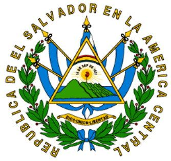

Simbolos patrios
Escudo Nacional

Rafael Barraza Rodríguez, calígrafo salvadoreño, creó el escudo nacional. Fue el ganador de 30 participantes más en el concurso promovido por el entonces Ministerio de Guerra y Marina, en 1912. Este símbolo patrio ha sido inspiración para muchos escritores y poetas que,
con el correr de los años, han dado diferentes interpretaciones.
Bandera

Esta bandera estaba formada por cinco franjas azules y cuatro blancas que en el ángulo superior
sostenían un cuadro de color encarnado (tipo rojo borgoña), con 14 estrellas blancas de cinco picos cada una, las que simbolizaban los departamentos de la república.
Himno Nacional
El Himno Nacional de El Salvador, que se adoptó popularmente como la Canción Nacional el 15 de septiembre de 1879,
no tuvo reconocimiento oficial sino hasta el 11 de septiembre de 1953.
Esto debido a una polémica de prensa que se suscitó por unas dudas al respecto.
Historia
Época precolombina
Antes de la llegada de los españoles a América, el actual territorio salvadoreño estuvo habitado por distintas etnias indígenas, destacando los pipiles, una población de origen náhuatl que ocupó la región occidental y central del territorio y los lencas que poblaron la zona oriental del país. Pero el dominio más extenso hasta la conquista española fue el del reino de Cuscatlán (El Salvador).
Conquista, colonia e independencia
Los conquistadores españoles, encabezados por Pedro de Alvarado, junto a su hermano Gonzalo, cruzaron el río Paz entre los años 1524-1525. Arribaron desde la zona que comprende la actual república de Guatemala luego de participar en la conquista de México. Durante la colonia, El Salvador formó parte de la Capitanía General de Guatemala, también conocida como Reino de Guatemala. El territorio salvadoreño estuvo dividido en las Alcaldías Mayores de Sonsonate y San Salvador, siendo esta última erigida como Intendencia a finales del siglo XVIII.
En 1811 y 1814 se produjeron importantes alzamientos contra el dominio español que expresaron la inquietud independentista de los criollos. Finalmente, las naciones centroamericanas consiguieron su independencia de España, el 15 de septiembre de 1821. Desde el 5 de enero de 1822, las provincias de Centroamérica, salvo la oposición de la élite sansalvadoreña e intelectuales guatemaltecos, se integraron al Primer Imperio Mexicano, hasta el 19 de marzo de 1823, cuando Agustín de Iturbide abdica ante el congreso.
Federación Centroamericana
En el período que siguió a la independencia, El Salvador y los demás países centroamericanos intentaron mantener la unión heredada de la colonia y crearon la República Federal de Centroamérica, una federación que se disolvió en 1839.
En 1851 El Salvador sufre su más significativa derrota militar desde su independencia, la Batalla de la Arada. Luego de la disolución de la Unión se sucedió un período de pugnas entre liberales y conservadores que se prolongó hasta 1871. Durante este período, decayó el cultivo del añil y se introdujo el del café. Entre 1871 y 1931 se sucedieron gobiernos que favorecieron los intereses de la naciente élite ligada al cultivo del café.
En 1882, durante la presidencia de Rafael Zaldívar, la Asamblea Legislativa decretó la abolición de las tierras comunales y ejidales, que fueron vendidas a particulares, lo que provocó un cambio brusco en la tenencia de la tierra.
Autoritarismo militar
En 1931, el General Maximiliano Hernández Martínez, llegó al poder tras un golpe de estado contra el presidente civil Arturo Araujo. Martínez estableció un gobierno ultraconservador y autoritario y reprimió con el ejército una sublevación de campesinos e indígenas en el occidente del país, lo que resultó en la muerte de miles de personas (algunos autores la cifran en treinta mil) y el asesinato del dirigente comunista Farabundo Martí.
El general Martínez fue depuesto por una huelga general en 1944, llamada Huelga de Brazos Caídos (El Salvador). Pero su gobierno marcó el inicio de una serie de gobiernos militares autoritarios sucesivos, que finalizarían en 1979 con un golpe de Estado al General Carlos Humberto Romero, del Partido de Conciliación Nacional (PCN) y la instauración de la autodenominada Junta Revolucionaria de Gobierno.
El general Romero pretendió endurecer aún más la dictadura en vez de flexibilizarla. Su mandato presidencial, inaugurado tras un escandaloso fraude electoral, se desgastaba muy rápidamente.
Los escuadrones de la muerte ensangrentaban el país sin acallar las protestas populares. La guerrilla se fortalecía.
Ante el auge de las luchas populares Estados Unidos incrementó su intervención, involucrándose aún más en la situación interna, llegando a mantener hasta un millón de dólares al día como «ayuda» a los gobiernos de esa época.
Guerra Civil
El año 1980 había sido muy determinante para el inicio de la guerra civil en El Salvador, por la serie de eventos represivos por parte del Estado y organizaciones paramilitares, refutados por acciones y respuestas de las organizaciones guerrilleras.
Mural con la imagen de Monseñor Óscar Arnulfo Romero
El 24 de marzo de 1980, Monseñor Óscar Arnulfo Romero, Arzobispo de San Salvador, es asesinado por un francotirador mientras oficiaba misa en la Capilla del Hospital Divina Providencia, ubicada al poniente de la ciudad capital, después de haberle exigido a Estados Unidos retirar su apoyo militar al régimen salvadoreño y ordenar en el nombre de Dios, a la misma Junta el cese de la represión. El mayor Roberto D´Aubuisson fue imputado como organizador del crimen y nunca se lo llevó a juicio. br
El autor del atentado fue el capitán del ejército Álvaro Rafael Saravia, actualmente con residencia y protección en Estados Unidos.
Los funerales, celebrados en la Catedral Metropolitana de San Salvador el 30 de marzo de 1980, se convirtieron en una batalla campal en la que las fuerzas de seguridad acometieron contra miles de salvadoreños concentrados en la plaza de la catedral, entre los que se encontraban miembros del Bloque Popular Revolucionario. El resultado: más de 40 muertos y doscientos heridos.